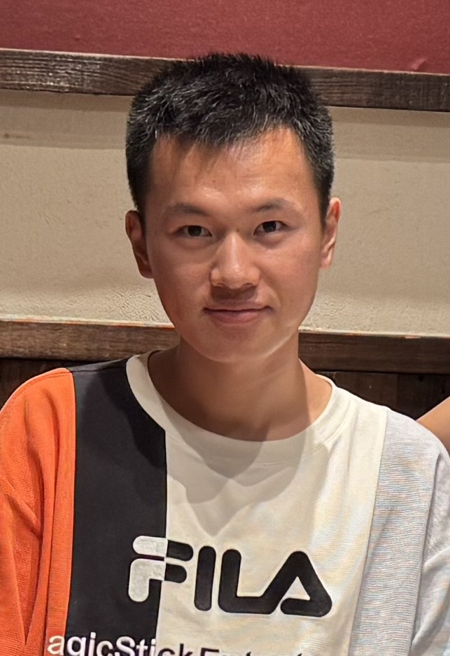

About
I am a Ph.D. student at the Technical University of Crete. My research interests lie in control of distributed parameter systems, particularly PDE backstepping, adaptive control, and learning-based control methods.
Before joining the Technical University of Crete, I received my master's degree in Control Science and Engineering from Xiamen University, and my bachelar's degree from East China Jiaotong University in Industrial Automation.

Research Interests
Publications
arXiv, 2025.
Paper
arXiv, 2026.
Paper
Education
Ph.D. Student, 2026–Present
M.Eng. in Control Science and Engineering
B.Eng. in XXXXX
Contact
Email: YOUR_EMAIL@tuc.gr